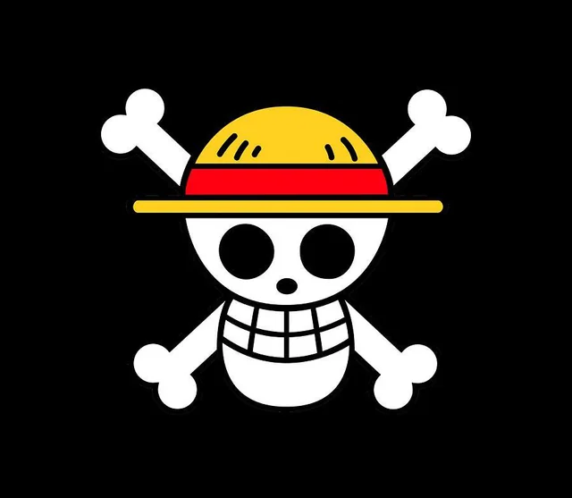
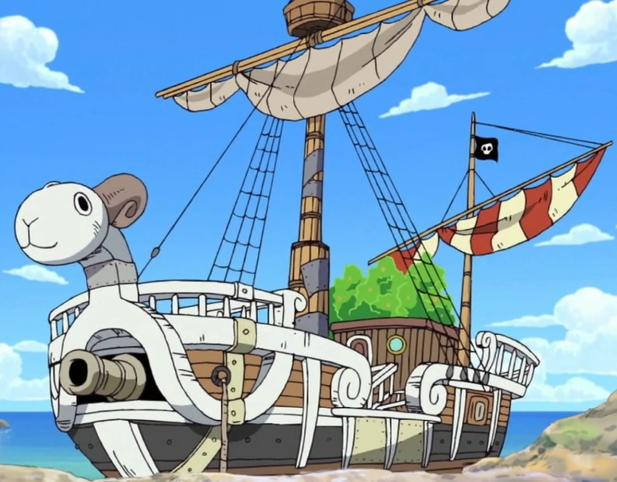
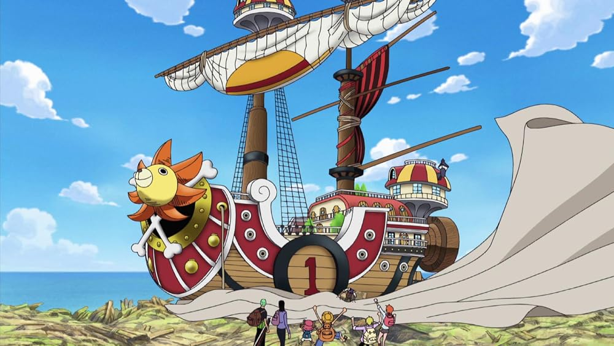

La enciclopedia no oficial de la futura tripulación del Rey de los Piratas
Los Piratas de Sombrero de Paja (Mugiwara no Ichimi) son una infame y poderosa tripulación pirata originaria del East Blue, aunque sus miembros provienen de diferentes mares. Son el foco principal del mundo de One Piece y están capitaneados por Monkey D. Luffy.
La tripulación fue fundada por Monkey D. Luffy al inicio de su viaje en el East Blue. El primer miembro en unirse fue el cazador de recompensas Roronoa Zoro. A medida que Luffy viajaba por el East Blue y posteriormente por el Grand Line, fue reclutando miembros clave con roles específicos y sueños propios, formando una familia muy unida y formidable.

El Jolly Roger tradicional de los Sombrero de Paja es una calavera con dos tibias cruzadas, luciendo un sombrero de paja idéntico al de su capitán. Fue dibujado originalmente por Usopp, ya que el dibujo inicial de Luffy era desastroso. Es un símbolo de libertad y rebeldía reconocido en todo el mundo.

